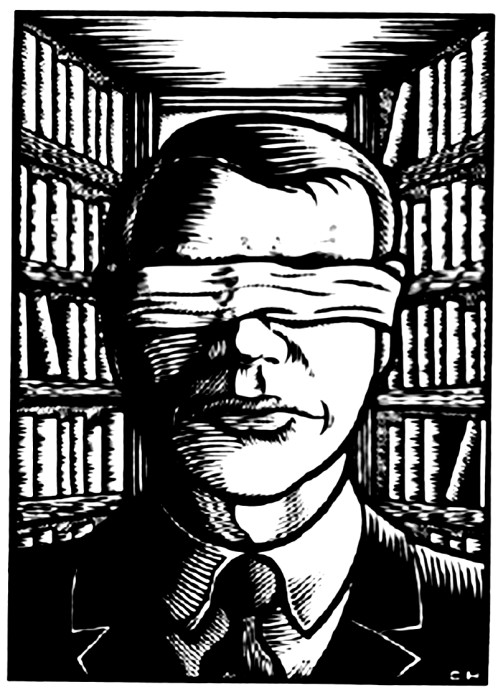

Pesan dan Harapan

Banyak anarkis, terutama yang individualis dan inseruksionis akan menghindari organisasi karena berbagai alasan. Namun keputusan mereka harus dihormati sebagai kediriannya yang tidak boleh diganggu.
Alih-alih dijauhi dan dimusuhi, dia harus tetap dirangkul, bahkan walau menolak menjadi anggota federasi. Lagipula, tidak mungkin pula dia akan benar-benar mengasingkan diri, atau tidak terlibat dalam kegiatan-kegiatan yang diadakan oleh federasi. Selain itu, seorang platformis tidak mungkin pula menolak inseruksi, terutama jika momentum revolusi tersebut tercipta.
Tapi karena revolusi tersebut tidak kunjung datang, kita
sebagai anarkis yang berada dalam posisi yang kritis dan radikal, kerap gelisah dan cemas.
Karena itu tidak heran kita kerap terjerumus terhadap aksi-aksi negatif. Karena itu pula anarkisme, sengaja atau tidak disengaja, menjadi salah satu kata yang kerap disalahartikan. Ini menimbulkan kesan
pemberontakan yang berlebihan,
" Jika buruh dan petani tidak ada di samping mahasiswa dalam menyusun barikade, maka itu bukanlah revolusi. "
bahkan terkadang terkesan macho dan maskulin. Akibatnya, kita sangat sulit untuk menarik massa dari perempuan, yang maaf, biasanya memang langsung keok melihat massa aksi yang mengenakan bandana hitam.
Saya juga melihat kecenderungan avonturis, bahwa revolusi hanya berarti pertempuran perjalanan, dan hal ini dianggap seru dan menyenangkan. Saya setuju bahwa hasrat destruktif adalah kekuatan kreatif, apalagi itu ditujukan untuk membangun sebuah tatanan yang baru. Tapi ingat, jika buruh dan petani tidak ada di samping mahasiswa dalam menyusun barikade, maka itu bukanlah revolusi. Itu hanya petualangan melempar molotov dan memukuli polisi, dan bisa dipastikan akan gagal.
Lebih menyedihkan lagi, terkadang nada perlawanan kita terlalu lantang sehingga hanya berupa caci maki belaka. Hal ini akan merugikan pergerakan kita, karena bisa-bisa dianggap anti- intelektual. Dalam contoh sebenarnya saja, ketimbang mengatakan “hancurkan negara,” lebih baik kita berseru “bentuk Konfederasi Indonesia!” Kita kerap dituduh reaksioner, artinya, kita hanya bentuk dari reaksi terhadap kesewenang-wenangan pemerintah. Ini tentu tidak benar, bahkan pemerintahan yang baik pun, akan tetap menindas.
Lagipula, apakah ada pemerintah yang baik? Kita menolak pemerintah dan kapitalisme bukan karena alasan-alasan reaksioner, tetapi karena secara fundamental: keduanya adalah penghambat utama dalam kebebasan manusia.
Apa yang telah saya uraikan dalam panduan ini mungkin nampak sangat kompleks jika dibayangkan. Tapi percayalah, jika dipraktikan, federalisme justru jauh lebih rasional dan manusiawi. Ia menghindari tali-temali birokrasi formal yang menghalangi setiap inisiatif spontan karena prosedurnya yang berbelit-belit. Dengan itu pula kita harapkan federasi mahasiswa mampu menjadi kekuatan yang revolusioner, yang otonom, yang mampu bergerak bak di bawah satu komando. Tanpa komandan tentunya.
Panduan ini kiranya tidak mengekang segala tindakan-tindakan kita ke depan. Tidak pula menjadi dogmatik seperti anjuran Lenin yang kemudian menjadi Leninisme. Panduan ini hanyalah saran dari pemikiran saya sendiri, dari hasil renungan soal kondisi gerakan mahasiswa di Indonesia, serta himpunan saran-saran yang dikeluarkan oleh pendahulu kita dan pemikiran serta pengalaman kawan-kawan mahasiswa yang lain. Sudah begitu ada beberapa hal penting yang tidak saya bahas secara mendalam, misalnya status keanggotaan dan pengkaderan.
Saya tidak pernah bermaksud untuk mencari anggota yang banyak, tapi saya tidak memungkiri bahwa hal itu mungkin akan lebih baik. Saya lebih tertarik untuk menularkan gagasan sosialisme libertarian ketimbang memaksa mereka menjadi anggota federasi walau tidak mengetahui prinsip-prinsipnya. Saya lebih menyukai mahasiswa yang menjadi sosialis libertarian dan simpatik dengan federasi, serta terlibat dalam kegiatan federasi dan memberikan dukungan dan bantuan. Mereka yang melakukan itu, sesungguhnya justru jauh lebih seperti “anggota”, bahkan walau tidak tergabung ke dalam federasi, ketimbang anggota federasi yang tidak melakukan apa-apa.
Terkadang kita bosan untuk mendiskusikan hal itu-itu saja. Misalnya, “apa itu anarkisme?” Namun kita tidak seperti itu. Sebab akan ada orang-orang baru, orang yang berpengetahuan sangat dasar saja, dan mereka tidak boleh ditinggal. Jika tidak, maka federasi mahasiswa akan mati ketika yang lebih tua dan berpengetahuan luas lulus. Tidak ada transfer pengetahuan.
Pengkaderan mungkin mengesankan bahwa akan ada relasi timpang antara angkatan muda dan angkatan tua, antara junior dan senior. Tetapi saya perlu ingatkan bahwa ada perbedaan mendasar antara bersikap egaliter dengan mengakui bahwa memang beberapa orang jauh lebih berpengetahuan. Ada perbedaan antara setiap orang punya kesempatan yang sama untuk belajar dengan orang yang memang telah belajar sejak lama.
Jadi saran saya, pendidikan yang sudah diatur materinya mungkin dibutuhkan untuk diadakan secara berkala setiap satu atau dua tahun sekali, terlepas dari diskusi-diskusi rutin, seperti kebanyakan organisasi ekstra-kampus telah lakukan.
Terakhir, saya menjadi sosialis libertarian bukan supaya merasa diri lebih hebat ketimbang kebanyakan orang. Federasi bukanlah pembebas, sebab sebuah proses pembebasan tidak dilakukan oleh hanya satu atau kelompok tertentu.
Pembebas itu tidak ada, rakyat membebaskan dirinya sendiri. Lagipula sudah dijelaskan dalam pengantar bahwa pada dasarnya semua orang adalah anarkis, mereka bahkan jelas-jelas mempraktikan anarkisme dalam kehidupan sehari, dalam pribadi dan dalam kehidupan sosialnya.
Beberapa orang bahkan membenci negara, walau tidak dipersenjatai oleh seperangkat teori anarkisme. Karena itu kita perlu memperbesar kekuatan revolusioner ini, dan jangan justru merendahkan mereka, yang mana justru menjadi kontra-produktif dengan tujuan kita.
Revolusi tidak terjadi besok, tapi ini tidak menjadi alasan untuk menjadi pesimis dan meninggalkan begitu saja proyek revolusioner sosialis libertarian.
Penetrasi kapitalisme semakin besar dan pemerintah semakin represif, di satu sisi krisis ekologi semakin memburuk dan mengancam masa depan kita semua, ekspolitasi perempuan dan kebebasan seksual tidak kunjung membaik penguasaan tanah-tanah semakin timpang dan kapitalisme membuat pernak-pernik yang mengaburkan fakta bahwa penindasan tetap ada walau terlihat lebih manusiawi membangun kekuatan sudah menjadi sangat penting dan mendesak. Kita harus bergerak sekarang. Mahasiswa bisa menjadi pelopor.